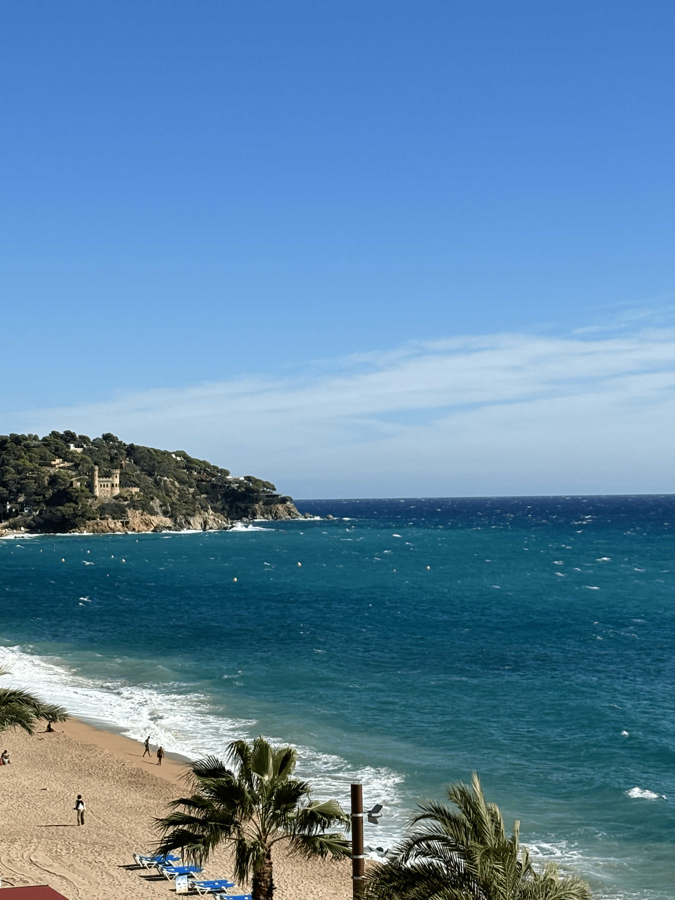
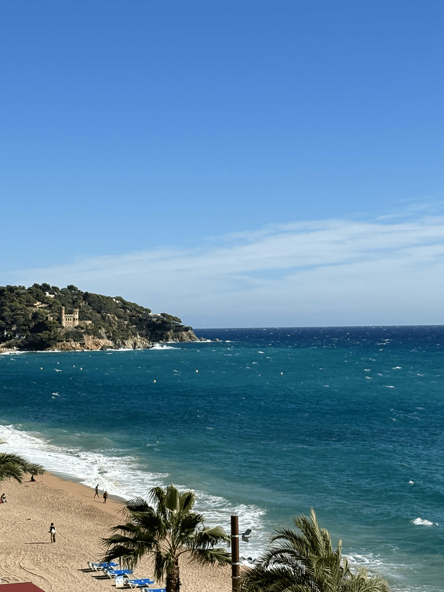

Intro
In het noorden van Spanje, te midden van de prachtige provincie Catalonië, ligt de bruisende toeristische badplaats Lloret de Mar. Deze bestemming staat bekend als een van de meest populaire badplaatsen in Spanje en trekt jaarlijks een diverse stroom aan toeristen, vooral van buiten Spanje. Lloret de Mar bevindt zich op ongeveer 100 kilometer van de Franse grens en biedt een schitterend, 2 kilometer lang zandstrand dat zich uitstrekt langs de azuurblauwe wateren van de Middellandse Zee. Lloret de Mar is vooral geliefd onder jongeren en biedt een levendige sfeer die perfect is voor diegenen die op zoek zijn naar avontuur en plezier. De stad herbergt een overvloed aan clubs, bars en restaurants, wat het de ideale plek maakt voor een energieke vakantie.
De bruisende nachtleven trekt vooral jongeren aan die willen genieten van feesten en sociale evenementen. Wat Lloret de Mar extra bijzonder maakt, is de sterke aantrekkingskracht op Nederlandse jongeren. Al jaren is deze badplaats een favoriete bestemming onder deze groep, wat heeft geleid tot een bloeiend aanbod van Nederlandse eetgelegenheden, cafés en discotheken. Dit zorgt voor een unieke sfeer waarin bezoekers zich meteen thuis voelen. Of je nu komt voor de zon, het strand of het uitgaansleven, Lloret de Mar biedt voor ieder wat wils en belooft een onvergetelijke vakantie-ervaring.